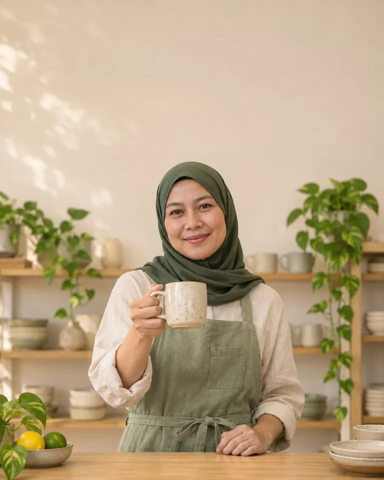
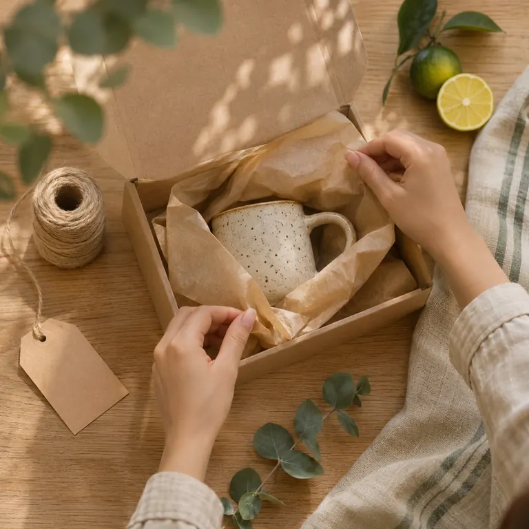

Pomelo STEM · Growing Smarter Solutions.
Uruskan kedai anda dari satu tempat yang tenang.
Kedai dalam talian, penyediaan pesanan dan automasi praktikal untuk perniagaan kecil dan sederhana di Singapura dan Malaysia.

Satu pesanan, dari mula hingga akhir
Ikuti pesanan PS-0124 dari pandangan pertama hingga diambil.
-

Pelanggan
Pelanggan menemui mug itu di laman kedai anda sendiri.
Domain anda, produk anda, harga anda. Dia melayari kedai melalui telefon selepas kerja.
-

Pesanan
Pesanan PS-0124 masuk dan dibungkus.
Dibayar dalam talian, diambil pada hari Sabtu. Pesanan menunjukkan apa yang perlu dibungkus dan bila.
Dibayar · Ambil hari SabtuPS-0124
Mug seramik berbintik × 1
-

Seller Studio
Anda menyediakannya dalam Seller Studio.
Pesanan, stok dan senarai semak penyediaan yang ringkas di satu tempat, pada tablet di kaunter.
Persediaan hari ini
- Bungkus mug untuk PS-0124
- Stok mangkuk: 6
- Cetak slip pengambilan
-

Pembantu AI
Ambil gambar. Dapatkan draf penerangan untuk disemak.
Sambungkan pembantu AI yang sudah anda gunakan melalui MCP. Ia membuat draf, anda menyunting dan menerbitkannya.
Semak sebelum terbit
Mug seramik berbintik dengan tapak tanah liat asli. Muatan kira-kira 350 ml. Setiap sepuh sedikit berbeza.
Apa yang kami bina
Tiga cara kami membantu, mengikut cara anda bekerja sekarang.
Kedai dalam talian
Laman dan domain kedai anda sendiri, dengan pesanan dan pengambilan di satu tempat.
Perisian tersuai
Alat kecil untuk kerja yang tidak lagi sesuai diurus dengan hamparan.
AI & automasi
Sambungkan pembantu pilihan anda melalui MCP, dan setiap hasil disemak oleh manusia.
Dibina untuk perniagaan kecil dan sederhana.
Kedai kecil
Satu kaunter, beberapa ratus produk, dan pesanan dari sembang serta laman web.
Borong
Pesanan berulang, senarai harga dan pengambilan yang mesti siap tepat pada masanya.
Penjual pelbagai saluran
Laman kedai sendiri serta pasaran dalam talian, dengan stok yang mesti sepadan di semua tempat.
Beritahu kami apa yang melambatkan kedai anda.
Panggilan ringkas sudah cukup untuk melihat sama ada kami boleh membantu.